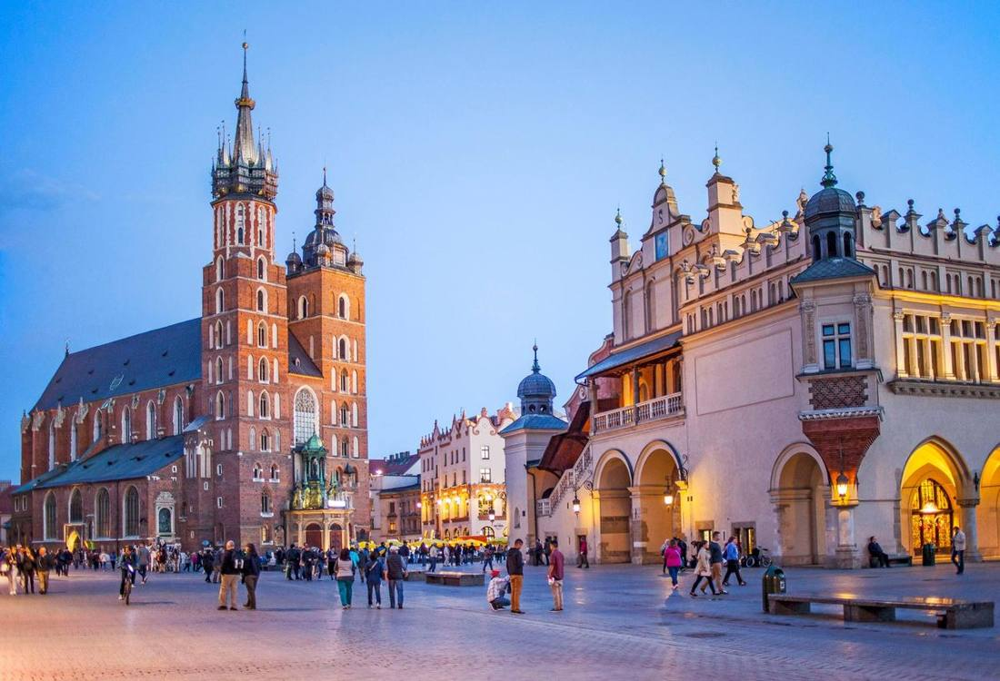

PolskaVoyage
Site de voyage créé avec l'IA pour faire découvrir mon pays, la Pologne : quatre villes, la gastronomie, des hôtels, et Smok le dragon pour apprendre le polonais. Nouvelle version aux couleurs de l'appli sonigo.

Détails du projet
Le projet
Faire découvrir mon pays, la Pologne, aux voyageurs francophones, avec quatre villes : Cracovie, Varsovie, Gdańsk et Zakopane, la gastronomie et des hôtels.
Nouvelle version (octobre 2026) : le site reprend la charte de sonigo, l'appli de guides locaux de notre projet UX, avec sa mascotte Smok, le dragon de Cracovie, qui apprend le polonais aux visiteurs.
Mon rôle
- Choix des villes, des lieux, des plats et des hôtels, grâce à ma connaissance du pays
- Refonte de la charte graphique pour l'aligner sur l'appli sonigo
- Arborescence de 12 pages, dont la légende de Smok, l'appli et la réservation
- Version mobile : menu ☰, titres et images adaptés au téléphone
- Création du site avec l'IA, que j'ai pilotée et corrigée page par page, et mes propres photos de Cracovie
Outils
- IA générative pour la création des pages
- HTML / CSS / JavaScript
- Maquette Figma de l'appli (projet de groupe)
- GitHub Pages pour la mise en ligne
Le contenu du site
Quatre villes, Smok le dragon et l'appli sonigo pour préparer tout le voyage.
- 1
4 villes
Cracovie, Varsovie, Gdańsk et Zakopane : les lieux à voir, des circuits avec un guide local et les mots utiles en polonais.
- 2
La légende de Smok
L'histoire du dragon du Wawel, la statue qui crache du feu et un mur photo pour les voyageurs.
- 3
Parler avec Smok
Un petit chat où Smok donne les mots du voyage en polonais, avec la prononciation.
- 4
L'appli sonigo
Comment ça marche en 4 étapes, et la maquette interactive de l'appli à tester dans la page.
- 5
Quoi goûter, où dormir
Six spécialités polonaises et une sélection d'hôtels à Cracovie, Varsovie et Zakopane.
- 6
Réserver et contact
Des formulaires de réservation et de contact, pensés pour le téléphone.